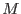
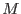
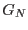
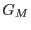
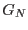
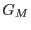

The following inequality must be satisfied for an individual pixel to
be found hot. Here  is the number of counts (qualifying
telemetered events located there) in the pixel itself and  is the
number of counts in whichever of the four directly adjacent active
pixels has the fewest counts.
is the number of counts (qualifying
telemetered events located there) in the pixel itself and  is the
number of counts in whichever of the four directly adjacent active
pixels has the fewest counts.  is the number of contributing
frames (that is, not counting bad frames). A pixel is not considered
active if it is listed as an uplinked bad pixel in the CCF. And
unless inclusion of the CCF advisory bad pixels has been disabled
(withadvisory=no), advisory dead pixels are also not
considered active. In the exceptional case of a pixel with no
directly adjacent active pixels, it is not judged to be hot
regardless of its count rate.
is the number of contributing
frames (that is, not counting bad frames). A pixel is not considered
active if it is listed as an uplinked bad pixel in the CCF. And
unless inclusion of the CCF advisory bad pixels has been disabled
(withadvisory=no), advisory dead pixels are also not
considered active. In the exceptional case of a pixel with no
directly adjacent active pixels, it is not judged to be hot
regardless of its count rate.
Similarly, this next inequality must be satisfied for a whole column
to be found hot. However, here  is the average number of counts
per pixel associated with , the number of good pixels in the
column. and  are the corresponding average number of counts
and number of good pixels for whichever of the two neighboring
columns has the lowest average number of counts. To be considered
good at this stage a pixel must be active in the above sense and not
have been found to be a hot pixel. Columns with no good pixels are
ignored, both as potential hot columns and as neighboring columns.
If both of a column's neighbors have no good pixels, it is not judged
to be hot regardless of its count rate.
is the average number of counts
per pixel associated with , the number of good pixels in the
column. and  are the corresponding average number of counts
and number of good pixels for whichever of the two neighboring
columns has the lowest average number of counts. To be considered
good at this stage a pixel must be active in the above sense and not
have been found to be a hot pixel. Columns with no good pixels are
ignored, both as potential hot columns and as neighboring columns.
If both of a column's neighbors have no good pixels, it is not judged
to be hot regardless of its count rate.
In the following schematic description of the program an asterix is used to mark items that do not apply to HTR mode data.
Initialize the bad pixel map:
Large enough for all valid chip coordinates plus a one pixel margin on
all sides; this margin and any median between the nodes (in case of
windowed telemetry) is initialized with Invalid; the rest with zero
Initialize the calibration bad pixel list:
Ignore advisory bad pixels unless withadvisory == true
Ignore defective ("cool") bad columns unless keepcool == false
Convert bad pixel node coordinates to chip coordinates
Clip bad segments that extend above or below the window
if withfoundhot:
Create two histogram maps in the same dimensions as the bad pixel map,
one for the pixel* analysis and the other for the column analysis
Convert telemetered node coordinates to chip coordinates
for each telemetered event in a good frame:
Ignore and warn if any of the comprising pixels have invalid
coordinates; otherwise test against the pixnoiselimit* and
colnoiselimit and increment the corresponding histogram
maps accordingly at the location of each comprising pixel
for each calibration bad pixel:
if uplinked || DEAD, mark in the bad pixel map
Search the pixel analysis map* for hot pixels, creating a list of their
coordinates and recording as statistics for each column the number
of good pixels and associated average event count from the column
analysis map
if not HTR:
Mark the found hot pixels in the bad pixel map
Search the column statistics for hot columns, marking them in the
bad pixel map
for each calibration bad pixel:
if advisory && HOT && withfoundhot, warn if not already marked as
found in the bad pixel map
mark and reclassify as appropriate in the bad pixel map
Construct the merged list of bad pixel segments such that all locations
marked bad in the bad pixel map are accounted for and all pixels in
each segment have the same classification
Write the BADPIXn tables